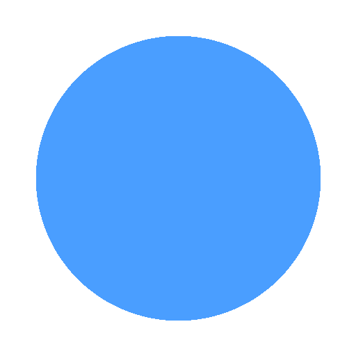

Turn YouTube playlists into private podcast feeds
Download for macOSPaste a YouTube playlist URL and get a standard RSS feed you can subscribe to in any podcast app.
Automatically downloads and converts video to high-quality M4A audio, ready for listening.
Periodically checks for new videos and adds them to your feed automatically.
Your podcast feeds are private and personal. No public hosting or third-party services.
Runs quietly in your system tray. Syncs in the background without getting in the way.
Native performance on macOS, Windows, and Linux. Built with Tauri and Rust.
Paste a YouTube playlist URL into Castify to create a new podcast feed.
Castify downloads each video, extracts the audio, and builds your feed.
Copy the RSS feed URL into your favorite podcast app and start listening.